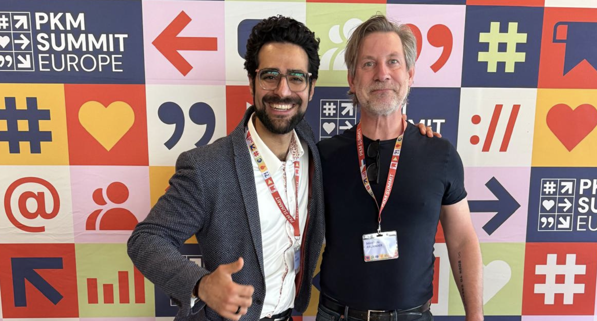
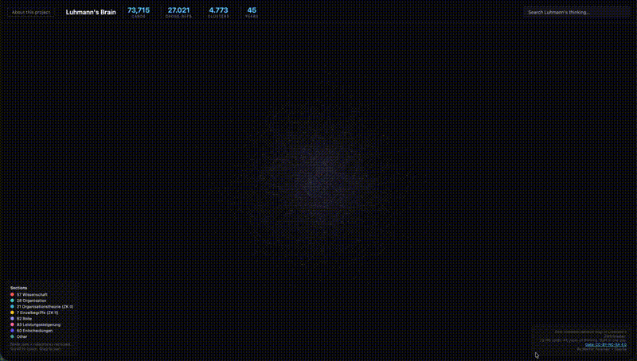

Aria Khodaverdi, whom I met at the 3rd PKM Summit in the Netherlands last week, sent me a link to the Niklas Luhmann Archive — a €5 million, 15-year project to digitize 90,000 handwritten note cards. I looked at it and wondered: why does this have to take so long? This is what happened in under two hours.

Aria Khodaverdi and Martijn Aslander at PKM Summit Europe, Utrecht, March 2026

Explore the NetworkClick any node. Follow the cross-references. Get lost in 45 years of thinking.
“In 70 years of Luhmann scholarship, nobody drew the map.”
Niklas Luhmann (1927-1998) was one of the most productive social scientists in history: more than 50 books and 550 articles. His secret weapon was a system of 90,000 handwritten note cards — the Zettelkasten — connected through tens of thousands of cross-references. It's the most famous example of networked thinking ever built.
Bielefeld University has been digitizing and transcribing this archive since 2015, funded with €5 million, planned through 2030. Their team transcribes and verifies cards by hand — scholarly edition quality. That work is essential and ongoing.
But in 70 years of Luhmann scholarship, nobody analysed the cross-references as a network graph. I wondered: what if you asked a different question? Not "how do we read every card?" but "how do we see the network?"
Using the archive's own open API, I downloaded all 73,715 indexed cards, extracted 18,289 creative cross-references, and built what appears to be the first complete structural map of Luhmann's thinking. What I found: the center of his thinking isn't where you'd expect, 23% of his cards are functionally dead, and the system helps read itself when you treat it as a network instead of an archive.
| Bielefeld (since 2015) | This project | |
| Goal | Read every card correctly | See the network as a whole |
| View | One card at a time + local tree | 73,715 cards as network graph |
| References | Outgoing (where does this card point?) | Outgoing + incoming (who points here?) |
| Cross-ZK | Not visualized | 1,976 bridges mapped |
| Hub analysis | Not available | Top 50 most-connected cards |
| Metaphor | Reading with a magnifying glass | Seeing the city from above |
A note on method: I'm not a scientist. I'm a PKM researcher who wanted to see how far one person with AI could get in a single session. No recognized scientific methodology has been applied to this work. This is an exploration, not a peer-reviewed study. The Bielefeld edition is the scholarly standard — this project complements it with a structural perspective they haven't built.
Zettelkasten I (1951-1962): 22,079 cards on law and administrative science.
Zettelkasten II (1963-1997): 51,636 cards on sociology and systems theory.
The first network analysis reveals surprises that 70 years of scholarship missed.
FindingsWe mapped 58%. Here's what becomes possible with the rest.
NextWhat the most famous Zettelkasten teaches us about dead notes, cross-domain bridges, and systems that talk back.
LessonsAI couldn't read the handwriting. Then we let the network read itself. CER from 163% to 27%.
MethodA 10-layer synaptic model, myelination scores, and an 8-dimensional diamond layer. Why this architecture works on the most famous knowledge system in history.
ArchitectureThe hidden API, the download script (80 lines), and why the archive was always open — nobody took it.
TechnicalOn ThetaOS, the Memex dream, and why the real problem was never storage and retrieval.
Blog250 years of thinking about information — from Otlet to Bush to Nelson to now.
BlogWhy the value is in the connections, not the nodes. The theoretical foundation behind this project.
LinkedInThe academic paper: confirmation-driven knowledge graphs and four design principles.
PaperThe European conference on Personal Knowledge Management, Utrecht.
EventIndependent thinker and builder. Creator of ThetaOS, a Life Lens System (LLS) — what emerges when you move beyond PKM by adding more elements: relations, context, time, confirmation. Powered by LLM, with 339 tables, 91,000+ records and 2.5 million words of structured content. This Luhmann project is a proof of concept for AI-augmented knowledge cartography.
The network map was built with Claude (Anthropic) as an AI collaborator — from discovering the API to parsing the XML to rendering the visualization.
The data comes from the Niklas Luhmann-Archiv at Bielefeld University, licensed under CC BY-SA 4.0. The archive provides a search API that returns card metadata and transcription previews as JSON, and individual cards as TEI-XML.
The download script makes 9 API calls with paginated requests of 10,000 results each. The network is extracted by parsing Luhmann's cross-reference notation from the transcription data. The visualization uses canvas-based rendering with force-directed layout.
Everything is open source. View the repository on GitHub.
This project maps the structure of Luhmann's thinking, not the content. Important caveats:
We're actively working on several of these limitations — including a context-driven transcription method for the remaining 41% and expanding the visualization beyond 5,000 nodes. This is an ongoing project.